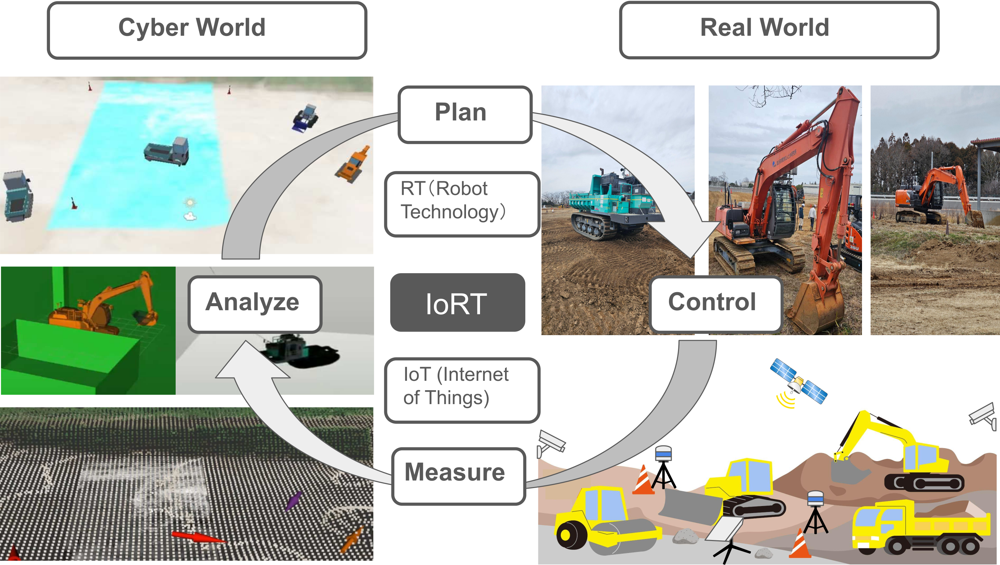
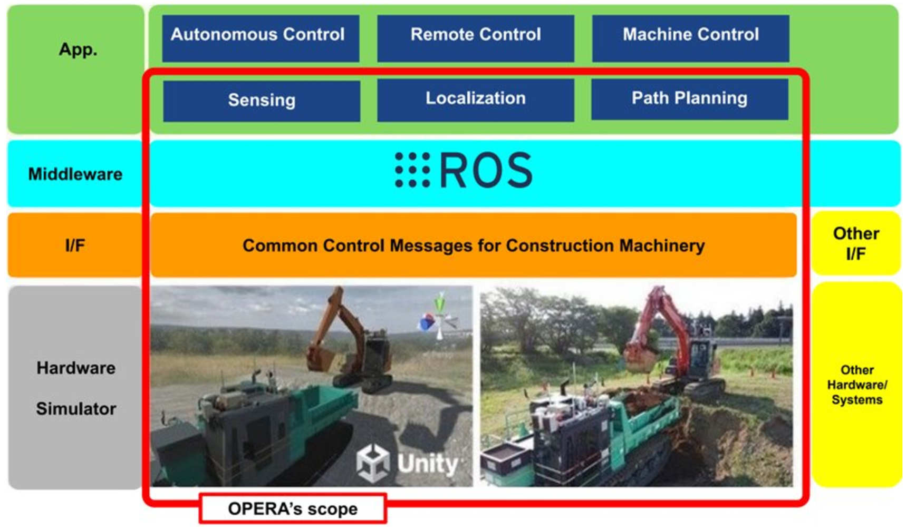

研究紹介
工事現場向けCyber Cyber-Physical System(CPS)プラットフォーム ROS2-TMS for Constructionの開発を行っています。ROS2-TMS for Constructionは土木研究所が開発を進めるOPERAと連携し、自律化施工を実現することが可能なオープンプラットフォームです。

独立行政法人土木研究所と共同で自律化基盤OPERAの開発を進めています。OPERAとは、自律化施工に必要な汎用機能を提供するオープンプラットフォームです。OPERAの詳細はこちらをご覧ください。
